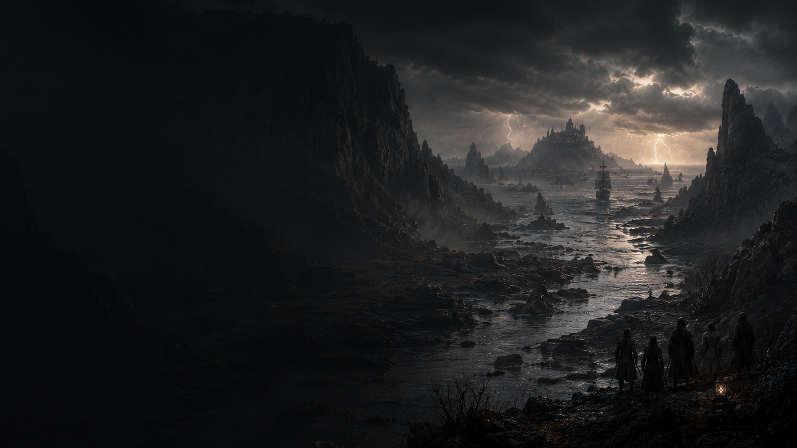

Original Worlds
Every project begins with its own identity, visual language, history, and reason to exist.
Independent by design
Original stories. Memorable characters. Cinematic worlds made independently.
Everdream Film uses new tools in service of an old ambition: to tell stories worth entering and create worlds that stay with an audience after the screen goes dark.
Our approach
The work begins with writing, character, atmosphere, pacing, performance, and a clear point of view.
AI-assisted filmmaking tools support the production workflow. They are not the subject of the film, and they do not replace creative judgment.
The aim is simple: coherent original films, made with intention, that earn their audience through the story on screen.
What guides the work
The technology will change. The standards for compelling filmmaking should not.
Every project begins with its own identity, visual language, history, and reason to exist.
Spectacle matters most when an audience cares who must survive it and what they stand to lose.
Each production choice—from script to sound—is judged by whether it strengthens the film.

Film One
A dark pirate adventure, a completed proof of concept, and the first test of an independent production model built to grow one deliberate project at a time.
The story is underway